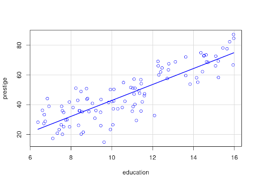
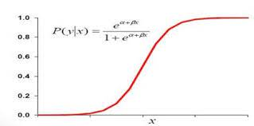

Regressão Linear

A análise de Regressão Linear é um método estatístico utilizado para investigar a relação existente entre variáveis, sendo essas variáveis chamadas de variáveis dependentes e variáveis independentes.
Essa análise pode ser usada, por exemplo, para descrever a relação entre variáveis para entender um processo ou fenômeno, para prever o valor de uma variável a partir do conhecimento dos valores das outras variáveis, para substituir a medição de uma variável pela observação dos valores de outras variáveis, e para controlar os valores de uma variável em uma faixa de interesse.
Regressão Logística

A Regressão Logística é uma análise que nos permite estimar a probabilidade associada à ocorrência de determinado evento em face de um conjunto de variáveis explanatórias.
As vantagens desse tipo de regressão incluem: (a) facilidade para lidar com variáveis independentes categóricas; (b) fornece resultados em termos de probabilidade; (c) facilidade de classificação de indivíduos em categorias; (d) requer pequeno número de suposições; e (e) possui alto grau de confiabilidade.